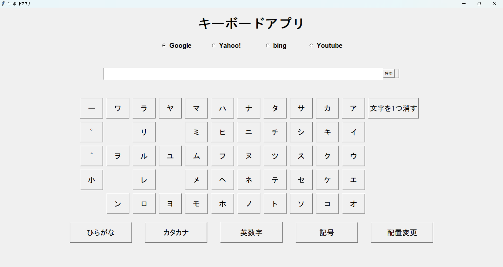
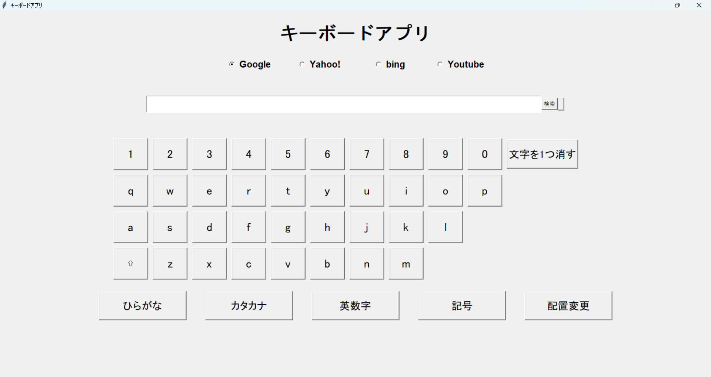
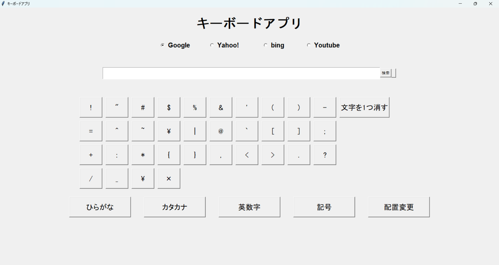
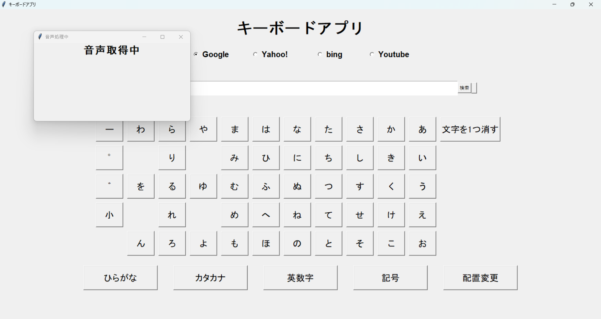
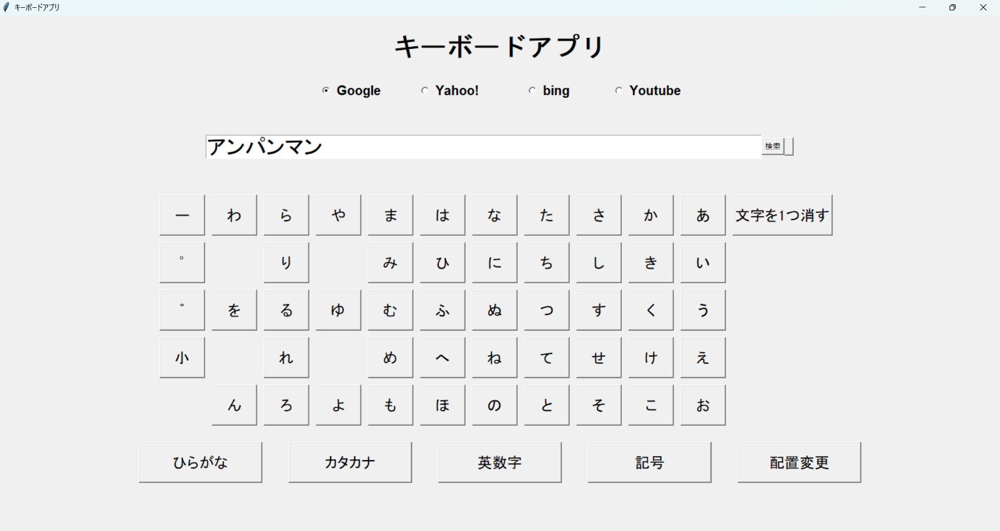
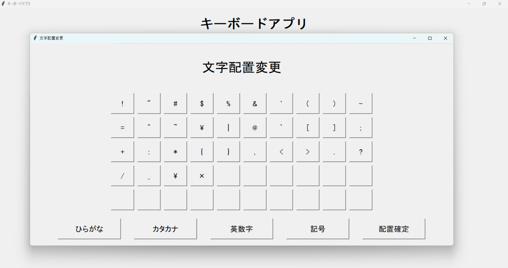
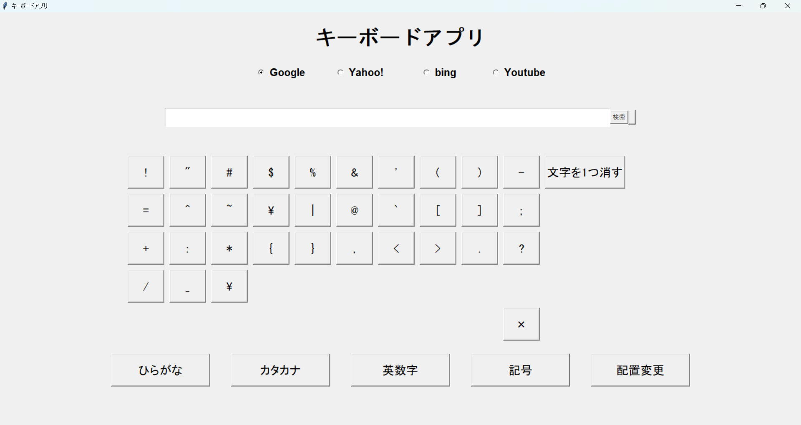

ローマ字を打たなくても検索できる50音キーボード
使用技術
Python/Tkinter/SQLite/pyaudio/SpeechRecognition
制作期間
1カ月

概要
U-22プログラミングコンテスト2024に出した作品です。
ローマ字がわからなくても押して文字が打てるようにというコンセプトで作りました。
更に文字の場所を変更できる機能や音声入力の機能を作りました。
アプリ構成
キーボード画面



- ・検索エンジンを選ぶことができます。
- ・検索の横のボタンを押すと音声読み取りになります。
- ・平仮名、カタカナ、英語、記号のキーボードがあります。
- ・下のボタンでキーボードを変えたり、配置を変える画面を出したりすることができます。
音声読み取り画面


- ・Pyaudioでマイクから音声を読み取り、音声ファイルを一時保存してSpeechRecognitionで音声ファイルを解析して文字起こしをしています。
ボタン配置入れ替え画面


- ・1回目に押したボタンと2回目に押したボタンの配置を入れ替えることができます。
- ・2枚目の画像は「×」と空白の場所を入れ替えた後の画像です。